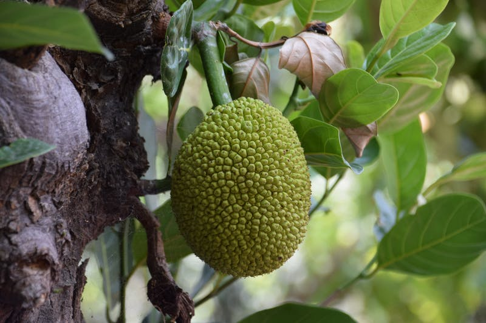

This website has some subtext that goes here under the main title. It is a smaller font and not bold.
Some random information

This is text under the image of a jackfruit.
This text is under a photograph of cloudberries.
The image above is a passionfruit. This is another sentence.
Mangosteens look similar to passionfruit on the outside.
A tree is known by its fruit; a man by his deeds. A good deed is never lost; he who sows courtesy reaps friendship, and he who plants kindness gathers love.
Saint Basil
Call to action! It's time!
Sign up for our product by clicking that button to the right.